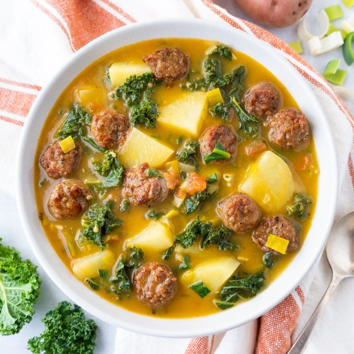

Portuguese Sausage, Potato & Leafy Greens Soup (Caldo Verde)

Nutrition (per serving)
651.6 kcalCalories
35.6 gProtein
55.5 gCarbs
34.5 gFat
Full nutrition table
| Calories | 651.6 kcal |
| Total fat | 34.5 g |
| Saturated fat | 10 g |
| Trans fat | 0.2 g |
| Cholesterol | 76.4 mg |
| Sodium | 928.4 mg |
| Carbohydrates | 55.5 g |
| Fiber | 7.2 g |
| Sugars | 7.5 g |
| Protein | 35.6 g |
| Potassium | 2279.9 mg |
| Calcium | 183.7 mg |
| Iron | 6.9 mg |
| Vitamin A | 576.4 IU |
| Vitamin C | 91.6 mg |
| Vitamin D | 24.6 IU |
Cookware
Ingredients
- 1 (5 oz) pkgbaby spinach
- 64 fl ozchicken or vegetable broth
- 4 clovesgarlic
- 1 bunchkale
- 2leeks
- 4pork sausages
- 4 mediumred potatoes
- 2tomatoes
- black pepper
- extra virgin olive oil
- paprika
- salt
Steps
- Preheat a large pot over medium-high heat.
- While the pot heats up, cut the sausages into ½-inch thick pieces.4 pork sausages
- Once the pot is hot, add oil and swirl to coat the bottom. Add sausage and pan-fry, stirring occasionally, until browned and cooked through, 5-6 minutes.2 tsp extra virgin olive oil
- Meanwhile, wash and dry the fresh produce. (Skip the spinach if it came pre-washed.)2 leeks
2 tomatoes
4 medium red potatoes
1 bunch kale
1 (5 oz) pkg baby spinach - When the sausage is done, remove to a plate using a slotted spoon and set aside.
- Using a clean cutting board, trim off the root end and dark green top of the leeks, leaving only the white and pale green parts. Cut in half lengthwise and rinse under running water, separating the layers to remove dirt and grit. Slice crosswise into ¼-inch thick pieces; place in a medium bowl.
- Small dice tomatoes and add to the bowl with the leeks.
- Peel and mince garlic; add to the bowl.4 cloves garlic
- Return the pot (with cooking juices) to medium-high heat and add more oil. Add leeks, tomatoes, garlic, and spices; cook, stirring occasionally, until veggies start to soften, about 5 minutes.2 tsp extra virgin olive oil
1 ½ tsp paprika
1 tsp salt
½ tsp black pepper - While the veggies cook, peel, quarter, and slice potatoes into ½-inch thick pieces.
- Add potatoes and broth to the pot; stir to combine and bring to a boil over high heat.64 fl oz (8 cups) chicken or vegetable broth
- Meanwhile, fold kale leaves in half lengthwise and slice off the stems. Chop or tear leaves into bite-sized pieces; add to the soup. Once the soup comes to a boil, reduce heat to a simmer, and cook until potatoes and kale are tender, about 10 minutes.
- While the soup cooks, roughly chop spinach and set aside.
- When the potatoes and kale are tender, add cooked sausage and spinach to the soup and continue to simmer until spinach is wilted and sausage is heated through, 3-4 minutes more. Remove from heat.
- To serve, divide soup between bowls and enjoy!